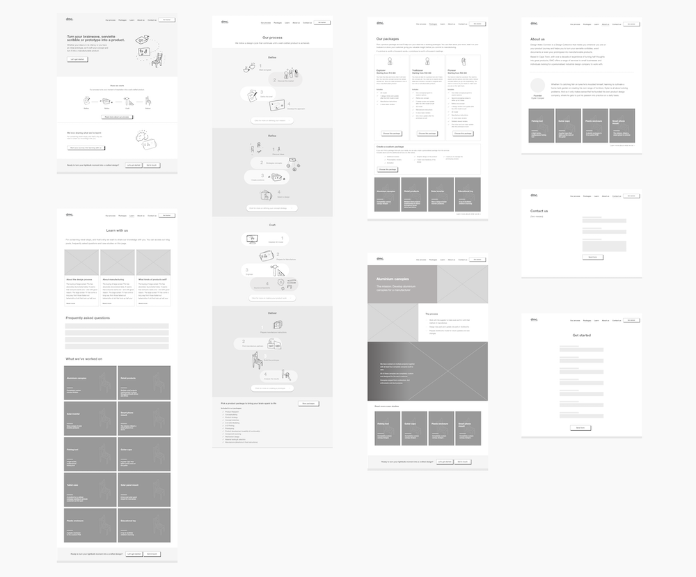
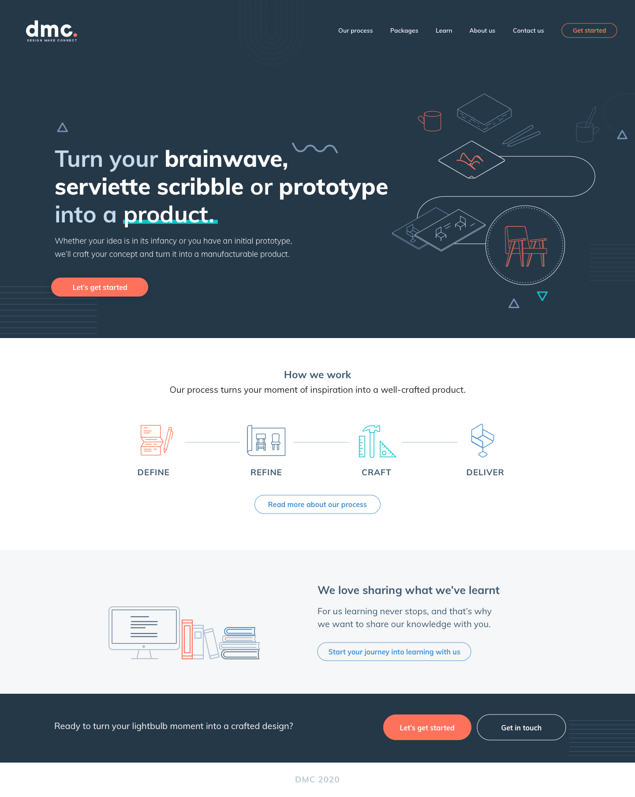
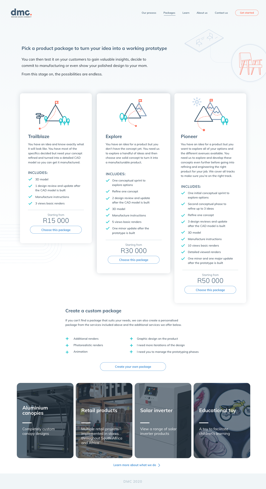
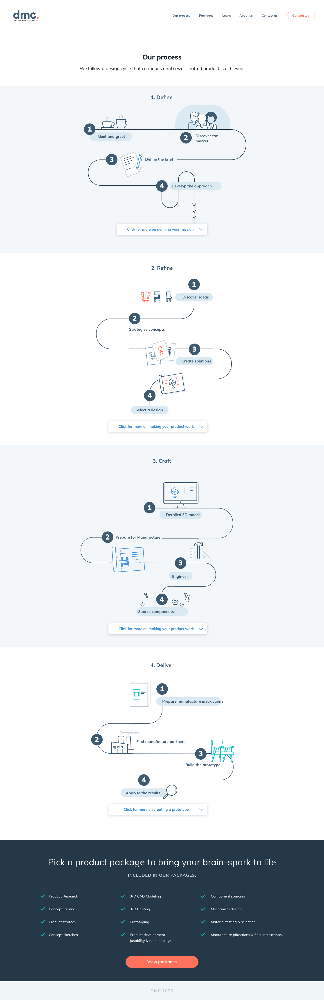
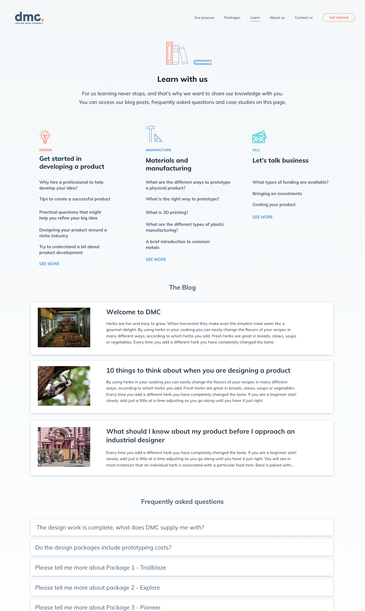

Design Make Connect
Web design and development
Design Make Connect is a website showcasing the work of industrial designer Dylan Cooper. It was an opportunity to see a website through from its concept to the live result.

The process
This project involved a rebranding, a website redesign and finally, the development of the website using Webflow. After kicking the project off with a fresh corporate identity, we started brainstorming ideas for the purpose of the site.
I like to create fairly detailed wireframes and encourage my clients to think about the best way to lead their clients through their website. We went through a number of iterations, cutting away unnecessary content until we found the best flow for his website’s users.
We decided to lead his clients on a single ideal path from the home page, to an infographic explaining his process, to a detailed description of his packages and finally, a detailed form that will supply him with all the necessary details he needs to evaluate a potential customer. This flow is designed to save him time, while educating his clients on what to expect from working with an industrial designer.

Once we were happy with the wireframes, I switched back to creativity mode. Creating illustrations and a beautiful, sleek layout is always a welcomed break after the intensity of designing wireframes, and I’ve found clients are always delighted when see a polished design after days of being forced to stare at black and white wireframes.
Since the bulk of the work was done during the wire framing stage, signing off on the design was fairly quick. This stage was followed by development. In this case, I used Webflow so that Dylan would be able to edit his own website using their CMS functionality.



